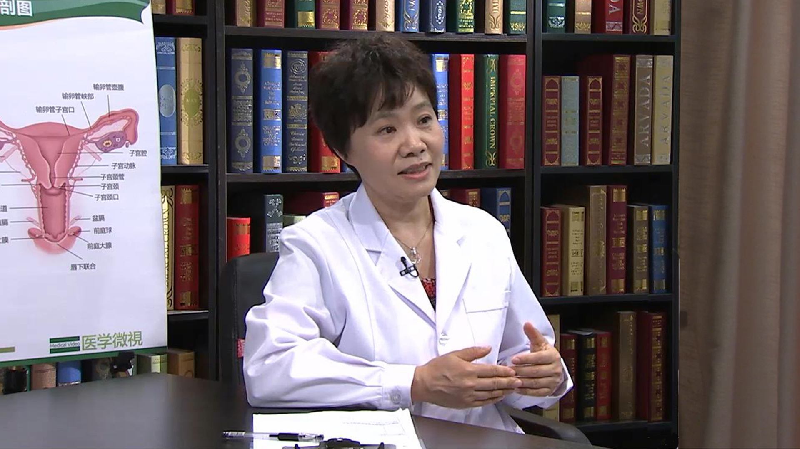

1.51 卵巢囊肿¶
白文佩 教授¶

首都医科大学附属北京世纪坛医院妇产科主任 主任医师 医学博士 博士生导师；
中华医学会生殖医学分会委员；中华医学会科普分会委员；中华预防医学会妇女保健分会委员；国家卫计委专家组成员；国家健康科普专家库成员；北京市中西医结合学会更年期专业委员会主任委员。
主要成就： 近五年发表SCI论文35篇，累计影响因子95分，致力于妇科内分泌的基础与临床研究；主持国家自然科学基金2项，北京市自然科学基金2项，省部级项目8项等；2015年获全国妇幼健康科技二等奖；2017、2019年获北京大学医学部教学优秀奖；2019年获北京市“登峰人才”称号。
专业特长： 擅长妇科疾病诊治，尤其是疑难和危重急症的诊治，在更年期综合征和绝经相关疾病、妇科内分泌、妇科恶性肿瘤、宫腹腔镜微创治疗以及女性全生命周期健康促进方面深有造诣。
巧克力囊肿是怎么回事？¶
巧克力囊肿实际上的意思就是，它在卵巢上长了这么一囊肿，这个囊肿里边有一些液体，就像巧克力那样，棕褐色的，这样的一个囊肿是怎么回事呢？
女性每个月都来月经，来月经的时候月经会流出来，其实里边带着一些子宫内膜是更新的，但是这种子宫内膜如果它长到别的地方去了，长到卵巢上面去了，她每个月也会在出血，但那血排不出来，在肚子里面就形成了这么一个包，形成了这么一囊肿，她每个月都出一些血，就攒一些，每个月出一些就攒一些。
这种血因为它不是新鲜的，它是陈旧的，时间长了以后就看起来它里边是像那种液体的巧克力一样，而实际上是陈旧的血液，也就是说卵巢上面有这么一个包，这包里边还有这种液体的，陈旧的这种褐色的，像巧克力样的液体，所以我们就称为巧克力囊肿。
其实跟巧克力没有任何的关系，就跟吃巧克力没有任何的关系，它只是一个出了血，它血液因为陈旧的，是一个液体的，看起来就像液体的巧克力这种意思，是这样的一个事。
所以回过头来是说，它在卵巢上形成这么一个囊肿，她每个月来月经的时候她也会在出血，所以她这囊肿可能越长越大，也带来每个月她都会有疼痛这种情形。
每次来月经的时候，她就会流出来血，但巧克力囊肿它流不出来，其实也就是来月经的时候她也会疼，所以就会有痛经，而且痛经越来越疼，所以巧克力囊肿就是有痛经越来越疼。
当然如果有这样的一个包在肚子里的话，它也会影响到怀孕的问题，她容易不怀孕，因为卵巢上被这么一个囊肿占据了，又有出血又引起疼痛，会有些炎性的反应，所以她就不爱怀孕。
（采访）巧克力囊肿和卵巢囊肿是一回事吗？
应该说名词上的一些重叠，就像人里边有男人有女人，有大人，有孩子，卵巢的囊肿它就包含有巧克力囊肿，是这样的一回事。
卵巢囊肿到底是不是一种病？¶
首先卵巢在哪儿？咱们先看看卵巢是女性的两个重要的生殖和内分泌的器官，这套器官就是我们女性很重要的这样的一个器官，包括正中间的是子宫。
女性的子宫有多大，大概有手拳头这么大，它的里边是有一个子宫腔，其实我们很直观的说，这个子宫就是孕育下一代的宫殿，这个宫殿它两边有输卵管，输卵管的下方就是卵巢，正常大小的卵巢大概像杏那么大，在子宫的两旁有这么一个杏这么大的一个卵巢。
当然对于我们人体来说，在腹部的正中，在她的下方有骨盆保护着，因为它实在是太重要了，跟孕育下一代密切相关，卵巢其实在育龄女性来说，她每个月都有排卵，实际上她排卵的情形下，它就会形成一个囊肿，到了一定的时候它成熟了以后，卵子排出去以后，它就变成了黄体，它就会略萎缩一些。
总的来说女性一个月她有一次排卵，在排卵的时候它就会形成一个囊肿，这个囊肿小的时候是两厘米、三厘米，大的时候有五六厘米，所以猛的去做一个彩超的话，超声波一看卵巢上有这么一囊肿，就特别常见。
所以育龄女性每个月卵巢都会形成这么一个囊肿，然后排卵，所以实际上大多数的卵巢囊肿是生理性的，根本就不是病，所以根本不用紧张，尤其是说现在咱们体检都很发达了，不少的女性也都很方便，说到医院去做个B超看看，B超一看说卵巢有这么个包，三十厘米，有时候特别紧张，其实根本没有必要，95%的卵巢囊肿在两三个月以后再做B超没了，所以没事儿，不用特别紧张，实际上绝大多数是生理性的。
当中还有一些其它的情形，它就是病理性的，它真正的就是长出来一个囊肿，这种囊肿其实大多数也是一个良性的，包括我们说的是一个上皮性的囊肿了，实际上就说卵巢里边就是有这么一个包，你B超看它就在那儿呆着，这个囊肿跟卵巢有很密切的关系，然后B超就看见有这么一囊肿。
通常这种良性的囊肿，它特别稳定，它也挺老实的，你好几个月做个彩超它也都不变化，可能缓慢的一些增长，当然就是说我们医生会结合其它的好多的检查，如果觉得异常的话，也可能就会建议做手术。
压力过大也会导致卵巢囊肿吗？¶
这是有可能的，但肯定不是百分之百，不是必然的，当然可能性也不是非常小，为什么这么说呢？
因为其实卵巢它每个月排卵，都受大脑支配的，大脑是我们人的很重要的一个中枢神经系统，里边有个重要的一个器官，叫下丘脑，下丘脑又在指挥着垂体，垂体在发号施令，把这些信息通过血液给送到卵巢里边来，卵巢接受指令，它每个月到点这个卵泡就发育了，就排卵了，就为孕育下一代做准备了。
卵泡发育的过程当中，它会释放出女性特有的激素，雌激素，然后这种雌激素来到子宫里边去养着子宫，去让每个月的子宫内膜长起来，就像春天到了地会长起来，相对来说它会准确的比较好，然后来播种然后孕育下一代，但是如果这一个季节过去了，也没有来播种，它就得翻耕，翻耕就是来月经。
所以实际上这个子宫，它是听卵巢指挥的，而卵巢又听谁指挥呢？听脑子指挥，但是如果你压力特别大，脑子里乱了，包括下丘脑和垂体，这里边它就不协调了，它的指令发到卵巢这儿，这卵泡的发育就不像原来这么有规律，它可能就长出一些小泡来，我们叫多囊卵巢，可能它就老在那儿发育，但是总是没有一个好的能够选出来，能够排卵，所以它就可能长出好多这种小泡，这有可能是这样的一个情形。
当然多囊卵巢这样的一个疾病因为很常见，它跟精神的压力有一定的关系，但并不是非常的相关，所以这种情形，就是我们可以想象得到，就是卵巢的功能，因为你脑子乱了，她本身也乱，就长出这种囊肿来了。
什么样的卵巢囊肿，病理性的可能性大？¶
卵巢囊肿分为什么样的类型？生理性和病理性，这个特别重要，至于你去做一些鉴别的时候，可能我们看它的大小，看它是不是双侧的。
一般来说超过六厘米以上的卵巢囊肿，我们就认为它病理性的可能性大，双侧的囊肿一般我们也认为它是病理性的可能性大。
还有一个囊肿的内部如果不是那么清亮，里边有一些像血液这种东西的，或者是比较黏稠的黏液什么的，或者里边有一些实性的东西，病理性的可能性大。
如何诊断病理性的卵巢囊肿？¶
你肯定得到专业的医院，让医生来给你查。
当然了在查之前，医生好好的问你的故事，你比如说你家里有这种卵巢癌家族史的话，医生得特别注意，以及你近期内有没有这么一个囊肿，如果近期内没有，现在突然长起一特别大的，里面看起来又不好这种情形，肯定得特别警惕，但如果长年累月都有这么一囊肿，它生长特别缓慢，它也特别老实，那可能就比较好。
所以就是说一个你故事特别重要，你要提供给大夫你的这种蛛丝马迹，大夫可以做相应的检查，做妇科的检查，做完这些检查以后，医生如果确实发现有一些异常了，他就会建议去做超声，这种超声其实如果对于一个已婚的女生来说，从阴道做彩超看这种囊肿应该是最好的，对囊肿它就会距离比较近，就会看的比较清楚。
有些人说那我从肚子上做超声行不行，因为你从肚子上做超声的话一定要憋尿，因为在子宫的前方是膀胱，每两三个小时得小便一次，因为膀胱它有储存尿液的功能，如果你经腹做超声的话，你的膀胱是瘪的，肚子里因为有肠子，肠子里边好多气体，就会妨碍我们看超声的这种结果，所以你如果做妇科的彩超，你一定要经腹的话，你要憋尿，憋得很害，这样的话腹部的这种超声才会比较满意。
但一般来说，我们现在不这样做了，就从阴道做彩超会好，但有些小孩子从阴道做没法做，可以进直肠做彩超，这样会看的非常的清楚。
彩超其实判断卵巢囊肿，非常好的一个方法，几乎可以解决98%的问题，你要说看不清楚怎么办，我们可以去做磁共振，对卵巢的囊肿看的更清楚，你说我做CT行不行？CT差点，磁共振应该是对卵巢囊肿应该是最好的，是这样的一个情形。
除了这种检查之外，医生可能还会建议你抽一些卵巢肿瘤的标志物，叫类似于CA125，CEA，诸多的这种标志物抽血查，特别提醒大家不要在月经期去抽这种血，月经抽血会不准的，不是月经期去抽血，抽卵巢的这种肿瘤标志物，这样会比较好一些。
所以医生会通过你讲故事，会通过客观检查，还有一些化验，来判断你的这个囊肿后续怎么办。
如何自己判断是否患有卵巢囊肿？¶
要想自己发现，估计就是你自己去摸摸你的肚子，可以晚上睡觉之前，你把小便都排空，你躺在床上平躺着，把两个双腿屈膝，屈起来以后腹部就会是比较松软的，用手自己在肚子上，自己来回来去自己摸一摸，如果你觉得摸到了你这个肚脐下方有一包，还挺硬的，就上医院去，还有定期参加体检，如果想自己发现，是这样的情形。
当然了就是说如果有痛经，痛经越来越厉害，或者疼得特别厉害这些，你就早点上医院去，医生给你查一下，是不是卵巢的巧克力囊肿。
当然还有一种情形就是说活动之后，突然的肚子疼，一边的疼，这种有时候我们会考虑什么？叫卵巢囊肿的蒂扭转，有些人说是我夜里晚上起来，一坐坐得挺急的，突然一下疼了，这样的话突然一下疼的这种，你一定要上医院，因为这种卵巢它有囊肿拧了个以后，要是看的不及时，因为拧时间长它不是缺血吗，缺血就会坏死，坏死这一侧卵巢就不能要了，包括输卵管都不能要，但是如果去的早的话，我们给它掰回来，给它修理修理就OK，所以剧烈的这种腹痛你要注意。
还有一种情形就是月经期，突然一下也特别疼，这种我们一般考虑什么？是巧克力囊肿，来月经的时候崩破了，反正这也得去看病，我们也去做检查，是这样的事。
卵巢巧克力囊肿也会导致不孕吗？¶
当然。
卵巢的巧克力囊肿它相当于卵巢上长了子宫内膜了，它也总出血，它肯定就会有些炎症的反应，而且它也会让卵巢变得不像原来那么功能协调，所以她就容易不怀孕。
最影响怀孕的这种卵巢的囊肿，还就是卵巢的巧克力囊肿，当然如果输卵管这儿有囊肿，把输卵管给它扽住了，本来说实话输卵管你看这地方，我们说的输卵管伞就像那种章鱼似的那种爪，但是它很毛茸茸的，很柔软的，它会到卵巢的表面去拾卵，把它抓过来，然后把它送回去，送回到宫腔里边。
如果卵巢有巧克力囊肿的话，这些地方经常也会有炎症的反应，然后它也会粘连，甚至就是堵住了，变成积水，卵子过不去，所以就不怀孕了。
卵巢的巧克力囊肿，它大概会造成百分之三四十的人不怀孕。
哪些卵巢囊肿需要手术治疗？¶
什么样的囊肿它需要手术治疗？大家可能特别关心这个问题，如果直径大于六厘米的囊肿，持续三个月，它都没有消失，这就得做手术。 当然可能还会有一些其它的这种情形，我们得综合考虑，你比如这一家人卵巢癌特别多，我们一看她卵巢有个四五厘米的一个囊肿，又是囊实性的，又看着像个卵巢癌，我们可能会更积极的让她做手术。
如果有巧克力的囊肿，才四厘米，但她又一年不怀孕，我们也得让她做手术，所以可能有个大的原则，还有小的不同的情形，总而言之还是听专家的建议，针对个人的情况。
或者是我们说的卵巢冠囊肿，就是这个地方有一个囊肿，但是这种无论如何的话，我们该做手术，我们还得做手术，实际上就是说这囊肿到底是什么，如果是说让大夫回答这问题，只有做手术才能告诉你它到底是怎么回事。
当然了医生他也会分清楚你是生理性的还是病理性的，比如说你根本就不用做手术，大夫就说你两三个月以后再来复查个彩超，化没了那就没事了，要是还有那大夫有可能会建议你我们再观察观察，或者我们就做手术，因为只有做完手术以后把它拿出来送病理，才能告诉我们它到底是什么囊肿，是这么回事。
总的来说卵巢囊肿的手术风险，比其它的手术还是要小，比切个子宫什么的那还是要小的，但是说实话手术它就是有风险的，所以就是说我们决定做这件事情的时候一定好好的考虑清楚了，该不该做，怎么做，什么时候做，做什么样的手术，这特别的重要。
手术这件事情，首先要琢磨我们这手术该不该做，这个特别重要，不能我发现一囊肿立马就做手术，有的真的就不该做，所以就无所谓时机的问题，一定分清楚该不该做，再说什么时候做合适，实际如果该做的话，咱就早点做，这事只要不是月经期都可以做，当然了如果是个急症，你突然肚子疼了，扭转了，半夜也得做，如果破裂了的话，如果形成脓肿你又控制不好，多会儿也得做。
腹腔镜治疗卵巢囊肿效果好吗？¶
卵巢囊肿一般来说，腹腔镜做应该是最好的，现在腹腔镜的技术已经发展得非常的成熟，而且对于卵巢囊肿来说，我觉得是个特别好的适应证。
因为一般的来说，我们就打个一厘米的这样的一个小眼，然后我们把这卵巢囊肿剥了，拿出来就可以了，腹腔镜应该可以解决绝大多数的卵巢囊肿，除非它个子特别的大，当个子特别的大我们判断里面没什么事的话，我们可以把里面的水抽出来，剩个皮，完了以后再给她拿出来都可以。
我这就有一孩子，应该是在十年前了，她当时才十七岁，然后就是有个大的一个卵巢的一个囊肿，到我这儿来做手术，我觉得还是可以给她做腹腔镜，进去以后我就把囊液给她吸出去了，把她囊皮给她剥了，当时她还是个中学生，因为她这个卵巢撑得很大，她总有一个慢慢恢复的过程，大概花了两三年的时间，卵巢恢复到正常的大小，她今年已经结婚怀孕了。
所以其实是这样的一些妥善的治疗，应该还是非常好的，但每个人情形都不一样。
卵巢囊肿术后需要注意哪些问题？¶
术后近期内还是应该去见医生，拿到卵巢囊肿的病理（结果），因为我们把它做出来以后，我们一定要去送给病理科的医生，好好去看一看，它到底是什么样的一个囊肿，这种性质就决定了未来我们的处理。
你比如说就是一个我们说的良性的一个囊肿，上皮性的囊肿，其实做完也就做完了，就没事了。
但是如果是一个巧克力囊肿的话，大多数的还得需要后续的一些治疗，以免它复发，因为但凡没有绝经，巧克力囊肿它都有可能复发，也有可能影响到生育，所以后续的也有一些治疗的方案，是这样的事。
如果是输卵管系膜囊肿的话，那做完也就做完了，就没事了。如果是一些脓肿之类的，后续的一些抗炎的治疗还是挺重要的。
所以回过头来说你做完手术以后，大概七天左右或者最晚十天，要去找医生去看病理，乃至于里边可能会有一些恶性的一些问题，或者交界的肿瘤这种问题，所以一定要去看你的病理结果。
再往后是看看月经能不能到点来，一般的来说做完手术以后，一个月左右还是会来月经的，如果一两个月都不来月经的话，你还得跟医生联系，看看是什么情况，各式各样的情况都有可能发生，包括她可能心情紧张，身体不协调，这种可能都有。
其实特别告诉大家是说，你刚做完卵巢囊肿的手术以后，三个月以内不要做B超，你想想这地方刚做完手术，它这个地方多少都会有一些反应，你比方你这儿剌这一刀，你是不是看这个地方它会有一个愈合的过程，会发红，会有结痂，会有一个星期左右，它慢慢才脱了痂。
其实身体里边这种愈合，它有时候可能更慢，有些人做完手术以后一个月做一B超，又发现一囊肿，心里特难受，实际有可能什么呢？一个是生理性的囊肿，它本来就排卵了，还有一个有可能是一个恢复的过程，所以不要去做彩超。
怀孕之前应该做哪些检查？¶
怀孕之前应该让身体处于一个最好的一个状态，具体到妇产科的角度来说，我觉得至少你应该了解几个问题。
一个宫颈有没有问题，比如说宫颈癌是女性第一位的恶性肿瘤，应该做个宫颈细胞学检查。
子宫上它很容易长个肌瘤的，或者内膜里可能很容易有个什么息肉，你做个B超就能看出来了。
卵巢上它有时候你像囊肿什么的，B超也能看出来，包括你内分泌是不是协调，因为只有协调了它才能按月排卵，才能够去实现怀孕，是这么回事。
所以至少是说，你应该做一个宫颈的细胞学检查，做一个盆腔的超声，做一个性激素的检查，就是说你抽血，看看卵巢的这样的一个功能怎么样，细胞学检查。
其实我们做细致的话，你应该在两个时间点去查，一个是自然月经，就是自己的月经来的第二天到第四天，然后最好是第二天，自己来的月经第二天到医院去抽血，这样我们查一个基础的卵巢功能。
第二个时间点就下次月经来潮前的七天，这件事情挺难办，你说非卡到七天，你提前两三天，错两三天也问题不大，这时候我们去看一下卵巢的排卵的功能，你去查一下激素，所以这样的话我们看到卵巢的功能是怎么样的，有没有排卵，这个会比较好。
当然现代人她甲状腺出问题的风险也是比较多，所以同时查个甲状腺的功能，这样会好一些，当然同时你可以再查一下感染疾病，比如像现在梅毒、艾滋病了、肝炎了这些，你查一下你心里才放心。
还有一个就是你的肝肾功能，还有血常规，这些就是靠外一些的检查了。
总体来说，我们还是希望身体在一个相对好的一个情形下，尤其是说评估的比较周全的情形下再去怀，在临床当中其实我们看到一些问题，就总是觉得很遗憾，你比如说她怀孕了一做B超有个大囊肿，这时候就让我们很骑虎难下，一个怀孕不容易，第二这大囊肿我们搭不搭理它，这会让我们挺纠结的，说实话做手术不是不能做，但是我们这时候更加得权衡做手术给她带来的好处和弊端，是这样的一件事情。
所以有时候还是最好把这件事情先打理好了，再去开始新的一个历程。
孕妇检查出有卵巢囊肿应如何处理？¶
看这个卵巢囊肿它的性质是什么样的，实际上有时候怀孕的时候，也会带出卵巢囊肿来，而且在怀孕的时候，这种卵巢囊肿其实多半也都不用管它，动态观察就可以了，大多数的都不用做手术，只有很少的情形下，可能需要做手术。
比如说破裂了，比如说你非得考虑它是恶性的了，你就怕它是恶性的，要咱的命咱就做手术去，但这种可能性其实特别特别小，或者什么扭转了什么的，这种都很小可能性，绝大多数这种囊肿都是可以观察的，尤其是卵巢的巧克力囊肿。
卵巢巧克力囊肿在怀孕期间，它会被抑制和萎缩的这种倾向，如果是说怀孕之前，我们查的是巧克力囊肿，你们又怀上孕了，怀孕期间千万不要做手术，它自己就会萎缩掉，而且随着妊娠周数的增长，因为子宫大了，它有时候慢慢的把周围的粘连也分开了，这里边这些囊肿又吸收了，就没什么事了，或者有人她可能就是剖腹产的时候，一并再把这些囊肿能做就一并就做了，所以能不做手术不用做。
说实话妊娠期发生巧克力囊肿破裂的风险是很小的，因为怀孕的时候，她整个巧克力囊肿它是萎缩的状态，你再让它破还挺不容易的，很少，如果真是破了它可能就会引起一些腹膜炎，我们好好消消炎就可以了，真的它破裂的风险特别小，因为总体来说子宫它慢慢在增长，它这个囊肿在萎缩，所以它增长的过程当中，其实可能也在扽着它，它慢慢也在萎缩，你再让它崩破，破不了没事儿，一般这种可能性太小了。
卵巢囊肿手术治疗存在哪些风险？¶
手术的风险第一麻醉，叫麻醉意外，因为麻醉你不喘气了，没有心跳了，我们见过这样的手术，刚一麻醉病人就不行了，我们就抢救病人，手术还没做呢，这叫麻醉意外，麻醉意外发生的可能性是非常低的，但是有。
再往下就是说，如果我们做手术当中，碰到哪根血管大出血，这也是一个问题了。
还有一个手术的一些副损伤，比如说肠子伤着了，因为你这囊肿它跟周围它粘连的厉害，把肠子伤着了，把输尿管给伤着了，把膀胱给伤着了，这手术的一些副损伤，完全是有可能的，手术以后你发炎了，然后我们还得消炎，也是个问题。
手术以后因为老躺着，不起来活动血栓了，一起来堵住了，肺栓塞，这些都是有的，所以手术总的来说，我们一定会权衡利弊，就是说这个东西它该不该做，如果该做的话，我们就认为利大于弊，我们尽量去减少弊端，但是真的不能完全避免。
卵巢囊肿不孕的患者术后一定就能怀上孕吗？¶
一定能怀孕这事我保证不能答应，就是说一些人因为她不怀孕，她有卵巢囊肿，她找我们做手术来了，我跟她说最多的一句话就是说，囊肿我可以给你做了，手术以后能不能怀孕还得看你自己，你别以为我做完手术以后，你啥病都给去了，那是不可能的，是这么个意思。
当然了我们认为这种手术，它会提高生育率，改善生育率，也可能比如说这人她以前她就是不怀孕，做完手术以后她就是怀孕了，她的可能性增加了，但不是百分之百。
而且实际上，你比如说咱们正常人，大概夫妇同居未避孕，她一年之内怀孕的可能性是80%，但是比如这夫妇不怀孕，我们做完手术以后，她的怀孕率可能只能增长到40%，她还达不到正常人水平，但她原来她是不怀，是这么回事。